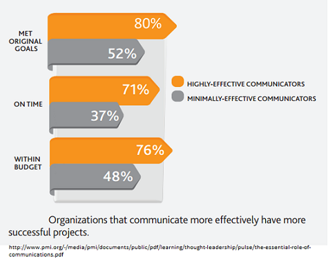
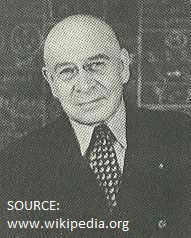
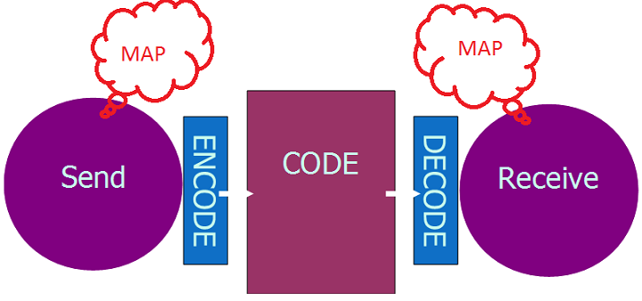
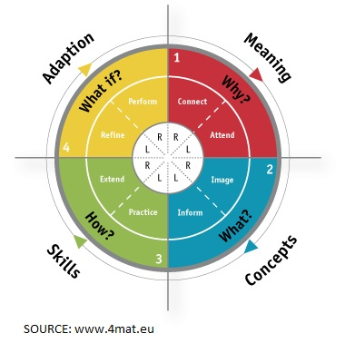
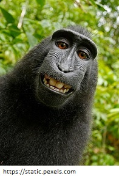
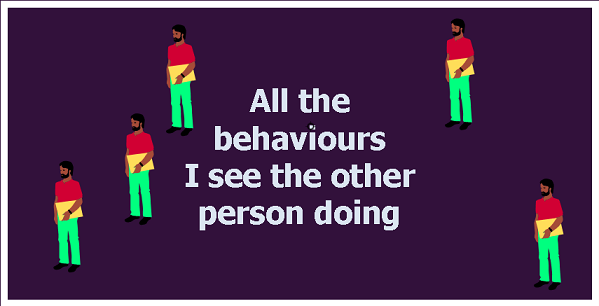
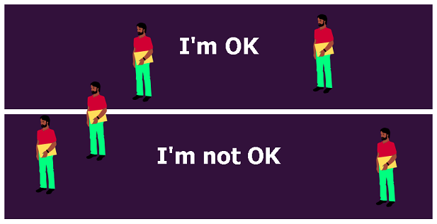
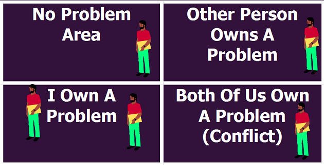

THE HIGH COST OF LOW PERFORMANCE:
THE ESSENTIAL ROLE OF COMMUNICATIONS
In the context of organizational project and program management, communications is a core competency that, when
properly executed, connects every member of a project team to a common set of strategies, goals and actions. Unless
these components are effectively shared by project leads and understood by stakeholders, project outcomes are
jeopardized and budgets incur unnecessary risk.
Different skill of communications
Different skill of communications

The map is not the territory

The father of general semantics, Alford Korzybski stated, "A map is not the territory it represents, but if correct, it has a similar structure to the territory, which accounts for its usefulness".
A model of Communication

4MAT - Dr. Bernice McCarthy

4MAT - Why ?
These learners:
who favor discussion and sharing
want to know why they should learn this
Women
25%
Men
19,4%
4MAT - What ?
These learners:
who favor information and analysis
want to know the information, and formulate concepts about it
Women
27,5%
Men
37,5%
4MAT - How ?
These learners:
who favor problems and expreimentations
want practical experiences and exercises to do with the information given
Women
14,8%
Men
23,5%
4MAT - What if ?
These learners:
who favor innovation and adaptations
want to consider future applications of what they are learning
Women
32,7%
Men
19,6%
A model of Communication
The meaning of communication is the reaction that you get.

Problem Ownership
Thomas Gordon
Problem Ownership

Problem Ownership

Problem Ownership

> 95 bpm
John Gottman found that when one of the people is a conflict is emotionally over-aroused, with a pulse above 95 beats per minute, conflict resolution is guranteed to fail.